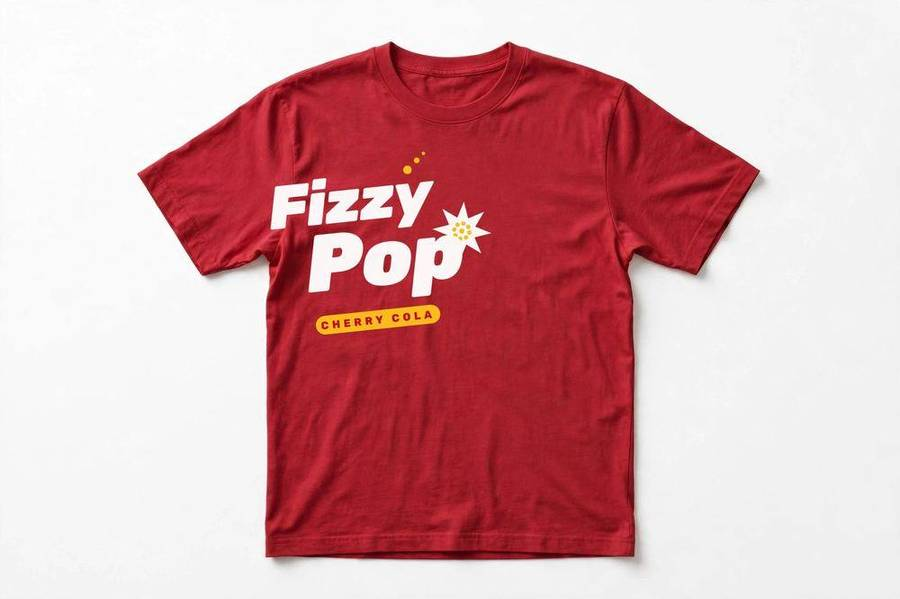
Open Loud Tee
Cherry red heavyweight cotton. The logo does the talking.
$32
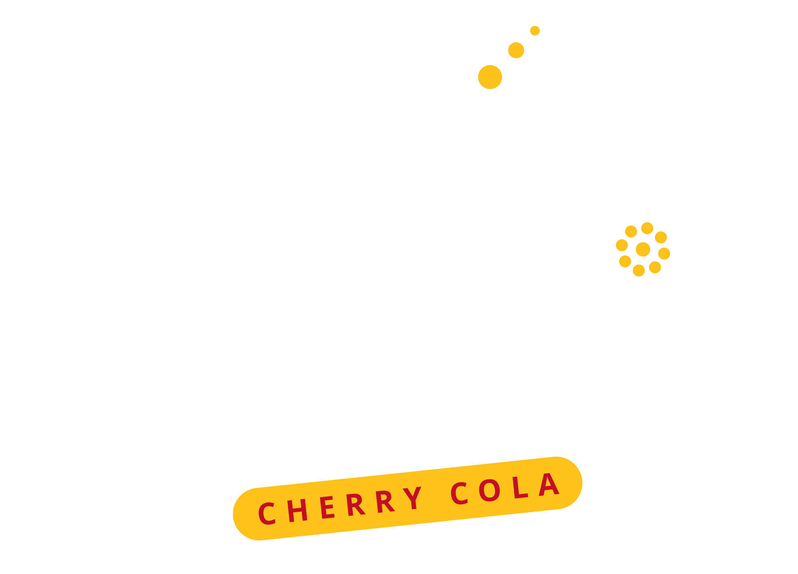
A 30-second commercial for a cherry cola. Brand, story, jingle, visual direction and edit, directed end to end. No cameras. No studio. One summer afternoon, built from nothing.
Spec commercial. Fizzy Pop is a fictional brand.
01 · The merch drop
Every great soda needs a wardrobe. The official Fizzy Pop merch line was designed alongside the commercial, in the same palette, with the same logo, for the same endless summer.
Concept line only. Nothing here is actually for sale. Yet.

Cherry red heavyweight cotton. The logo does the talking.
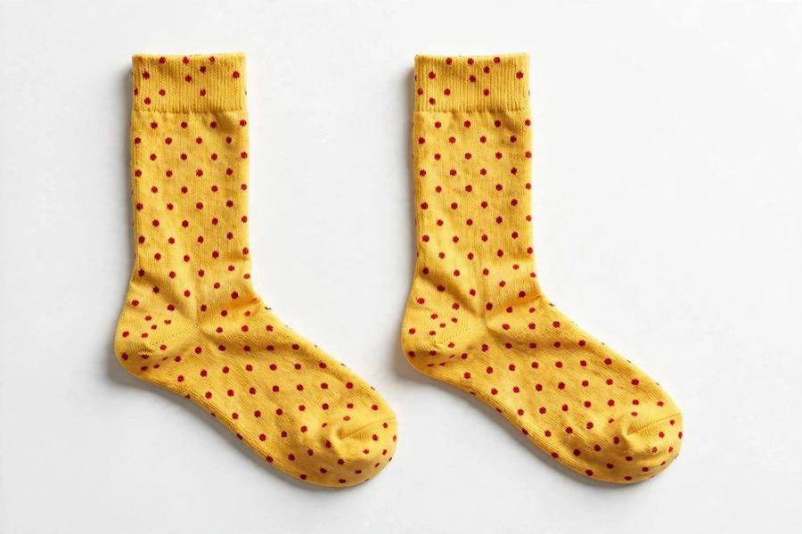
Sunflower yellow with cherry bubble dots. Loud from the ankle down.
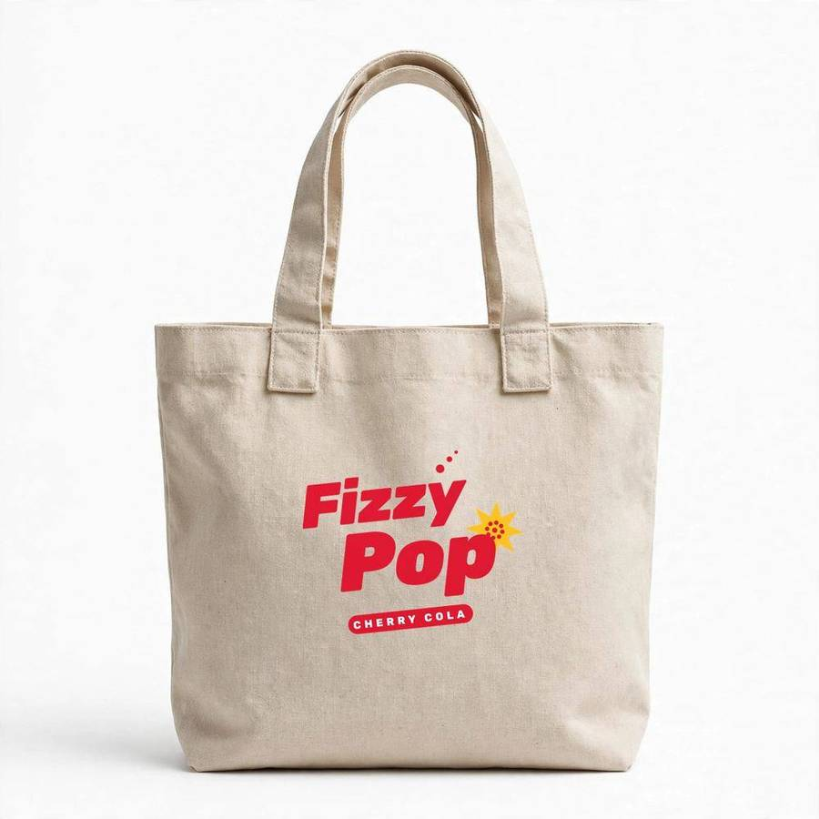
Natural canvas. Holds twelve cans or one ambitious picnic.
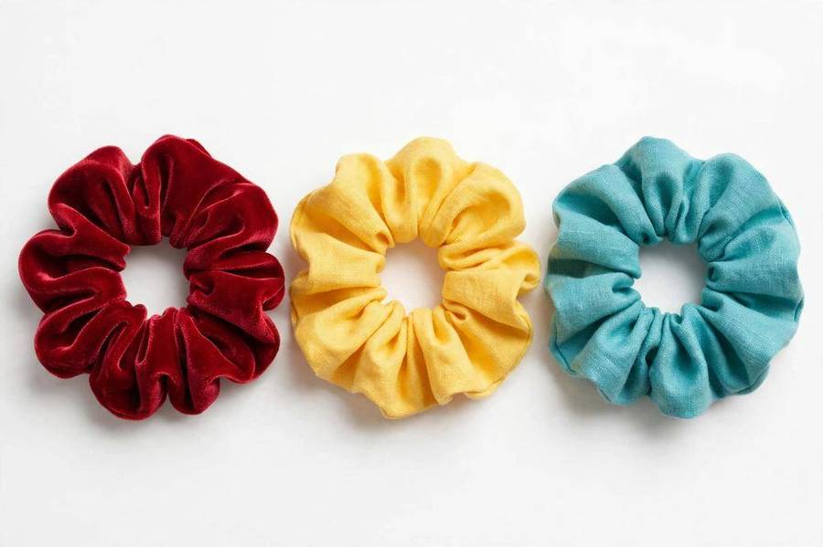
Cherry, sunflower, pool. As worn in the spot.
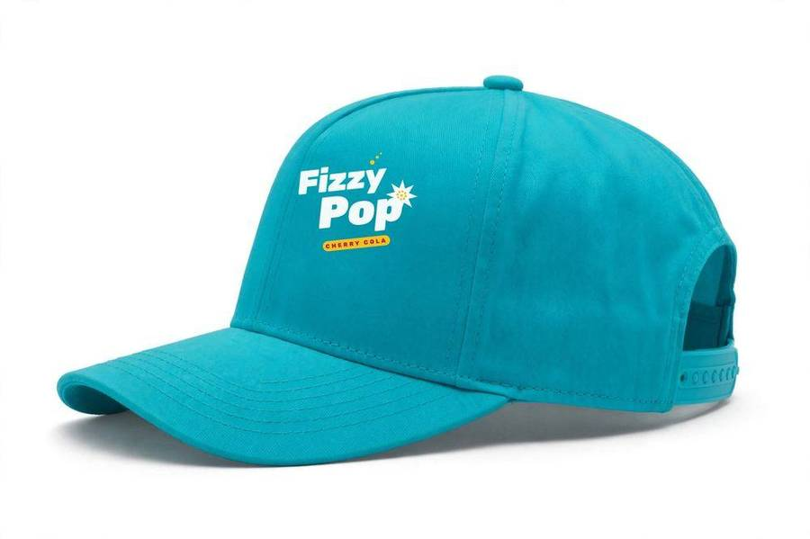
Turquoise twill. For loud afternoons.
Shot on Maple Street, on the people who would actually wear it.
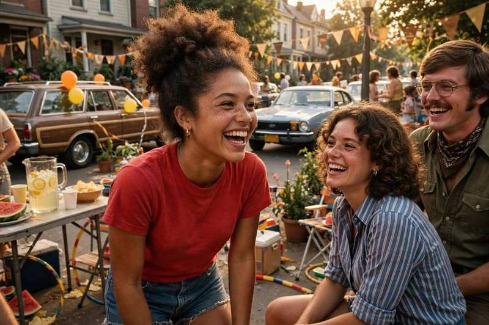
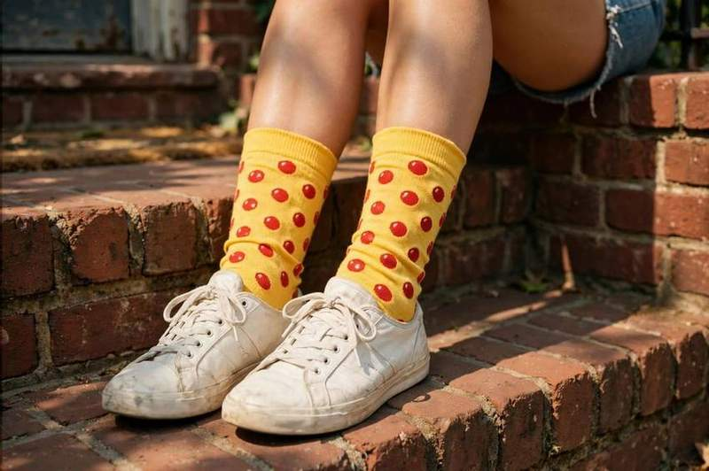
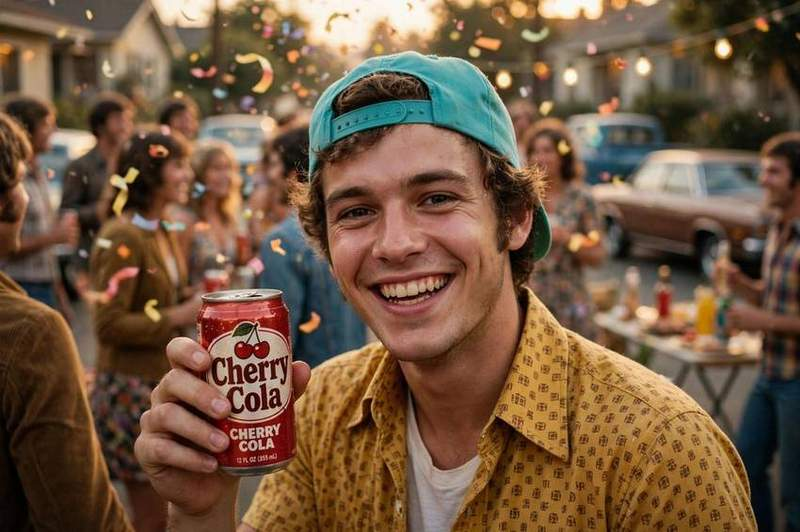
02 · The backstory
ORIVEX ARC-7 was a technical product film. Precision, narration, a sterile lab, a robotic arm. It proved the pipeline could direct something exact.
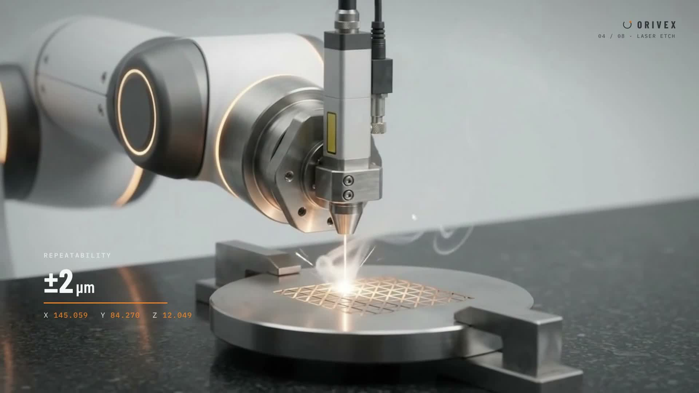
ORIVEX ARC-7 · the first test →Fizzy Pop is the opposite test.
A soda commercial. Character, comedy, color, music and nostalgia.
Same AI-assisted production pipeline. Completely different creative problem.
The question was simple: can an AI-assisted production create a 1970s-style TV spot that feels like a Saturday morning memory?
Not a tech demo. Not a showcase of AI tricks.
A real commercial, with a brand you could believe had always existed and a jingle you might find yourself humming afterward.
So I invented a cola, gave it a summer, and directed the entire spot without a camera.
03 · The brand
The brand needed to feel familiar before the audience knew anything about it.
Fizzy Pop Cherry Cola. 355 mL can. Tagline: Open loud.
I designed the logo as packaging, not as a technology mark. Heavy rounded italic lettering, stacked and tilted slightly upward. A starburst breaks out from behind the final letter, with three bubbles rising from it. A sunflower-yellow pill underneath reads CHERRY COLA.
It needed to work instantly. On a can. Across a room. In motion. At the end of a commercial.
The color system became part of the personality. Bright and cheeky, but with enough gloss and restraint to feel like a real consumer brand rather than a cartoon.
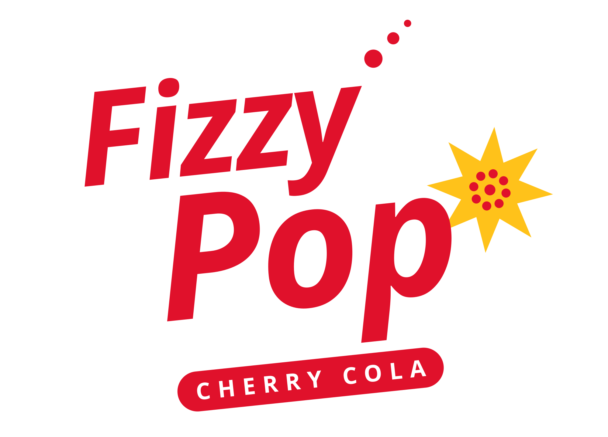
Original mark. The logo was designed specifically for this production and is not derived from any real cola brand.
04 · The world
A commercial only works if you believe the world it creates. So I built the world first, then locked it.
Juno is the face of the spot. Early twenties, warm brown skin, freckles, big natural curls in a high puff with a cherry-red scrunchie, gold hoops, a sunflower-yellow tee and cherry-red shorts. Two friends complete the block party.
The location is a fictional residential street called Maple Street. Brick townhouses in mint, peach and butter yellow. Front stoops with potted geraniums. A corner store with a red-and-white striped awning. A red fire hydrant.
Every detail exists to support the same feeling: a hot, slightly boring summer afternoon that is about to become something else.
Generative video becomes difficult when the world keeps changing underneath the story. So I used the same consistency system developed for ORIVEX. Four master references: the can, Juno’s portrait, Juno full body, Maple Street.
Each reference received one canonical description, repeated word for word across the prompts. Each shot had an approved keyframe before motion was generated. The can’s logo was attached as an image ingredient so the model reproduced the actual lettering instead of inventing a new version. Every can in the film inherits that same master reference.
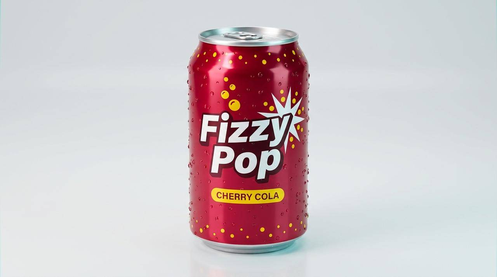
The master product reference. Every can in the film inherits this image and its logo.
Locks her face, hair and outfit for the close shots.
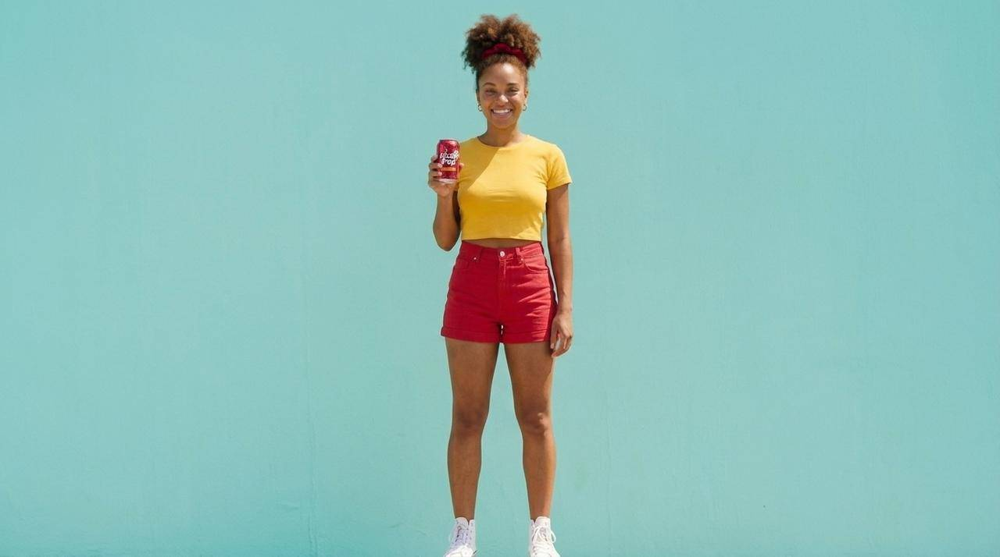
The same person, head to toe, for the wide shots.
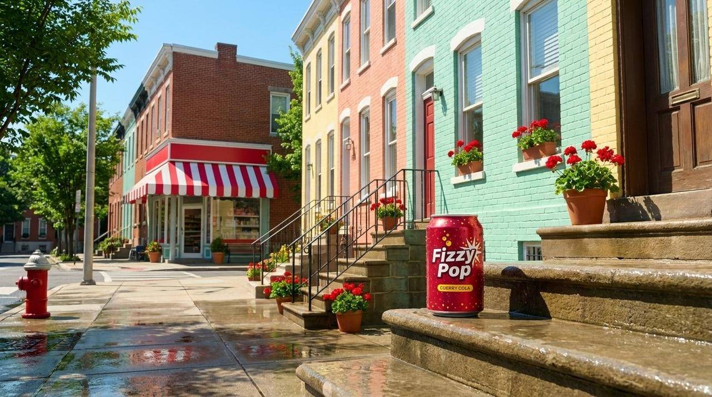
The full-color street. The faded opening is the same location, simply drained of color.
05 · The idea
The commercial begins with a sleepy, washed-out summer afternoon. One thing is different. The can is in color.
Juno cracks it open. The music drops. A wave of cherry cola sweeps through the frame, and the street comes alive in full color as a block party.
The color isn’t decoration. It is the narrative. The drained world represents the afternoon before the product: flat, hot and bored. The pop restores it.
Open loud, and the world gets loud with you. That is why the tagline isn’t simply a line at the end of the commercial. It is the plot.
The visual reference is specific: a 1970s summer afternoon remembered fondly, rather than a parody of the era. Heat. Boredom. A cold can opening. Then everything comes alive. Nostalgia as a feeling, not a costume.
06 · The ten shots
Thirty seconds. Ten shots. Roughly three seconds each. Every shot has one job.
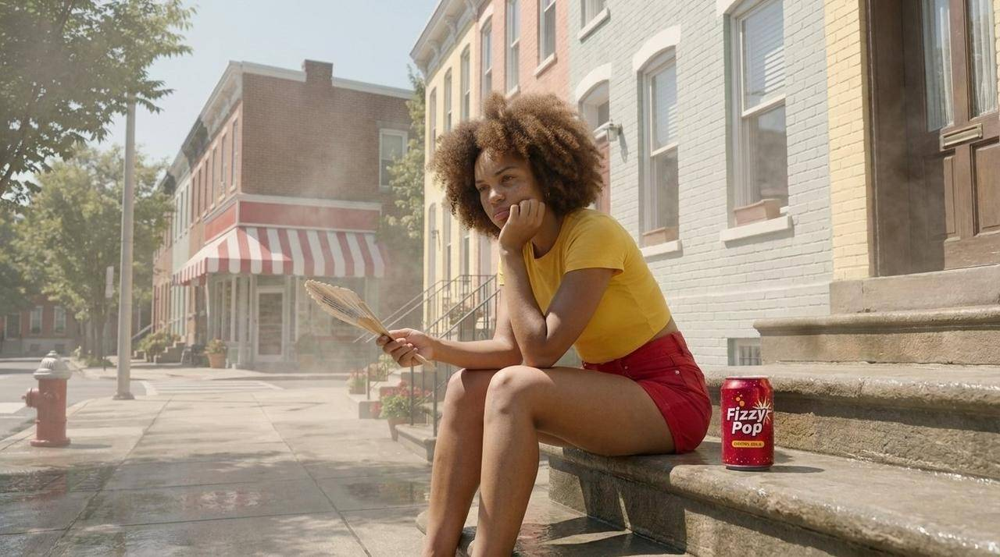
Juno sits on her stoop. Heat haze. A slow push in. The color was drained further in the edit.
The world needed to feel flat before the color arrived, so the eventual transformation would feel earned.
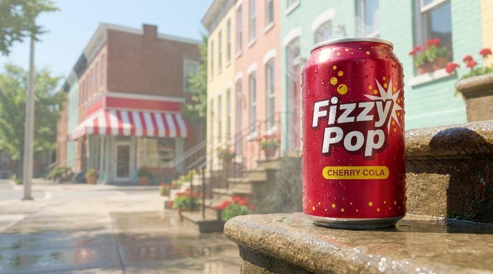
The can is the only saturated object in the frame. That’s the entire idea.
Cold mist curls from the top while the street remains gray behind it.
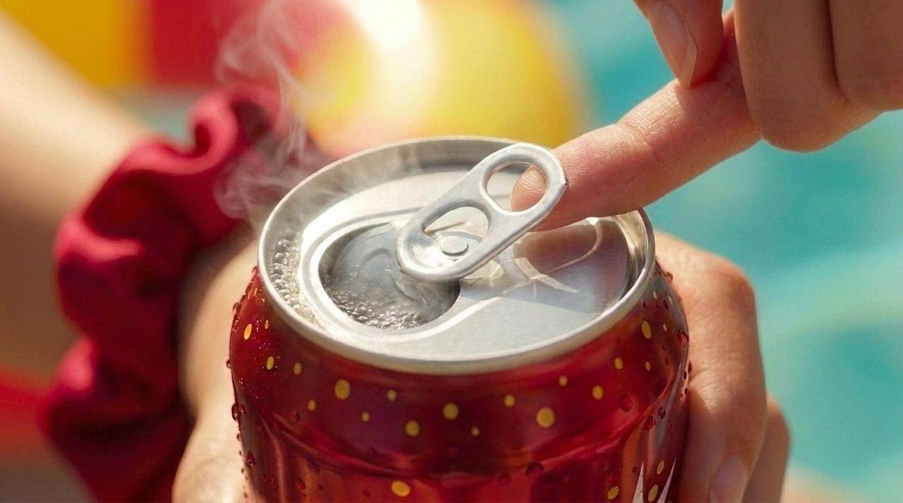
Hands are one of the harder things for generative models to get right. So this shot was constrained from both ends. A start frame. An end frame. The model only had to generate the small movement between them: one finger lifting the tab into place.
The can crack itself is real recorded audio. Nothing sprays out. The restraint makes the moment feel more premium.
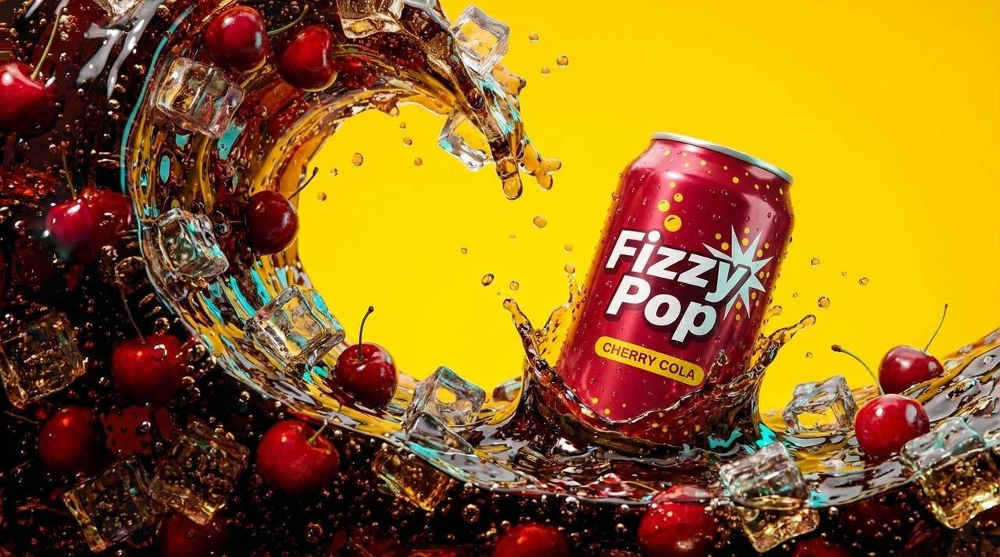
A wave of cola, ice and cherries fills the screen. We cut to the party on the exact frame where it covers everything.
A dissolve would simply transition between two images. The wipe does something better. The drink itself becomes the transition.
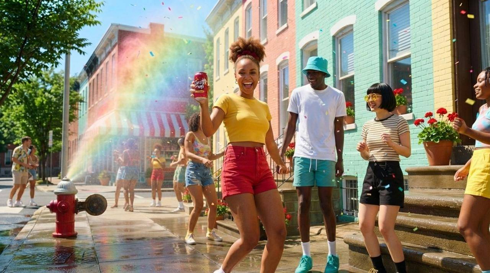
Maple Street returns in full color. Juno and her friends sway as the party comes alive. Nobody spins. Nobody performs exaggerated choreography.
Fast body movement is one of the places generative video can lose its shape, so the energy comes from the camera arc, confetti and editing rather than frantic movement. The logo sits as a small badge in the corner. Never over a face.
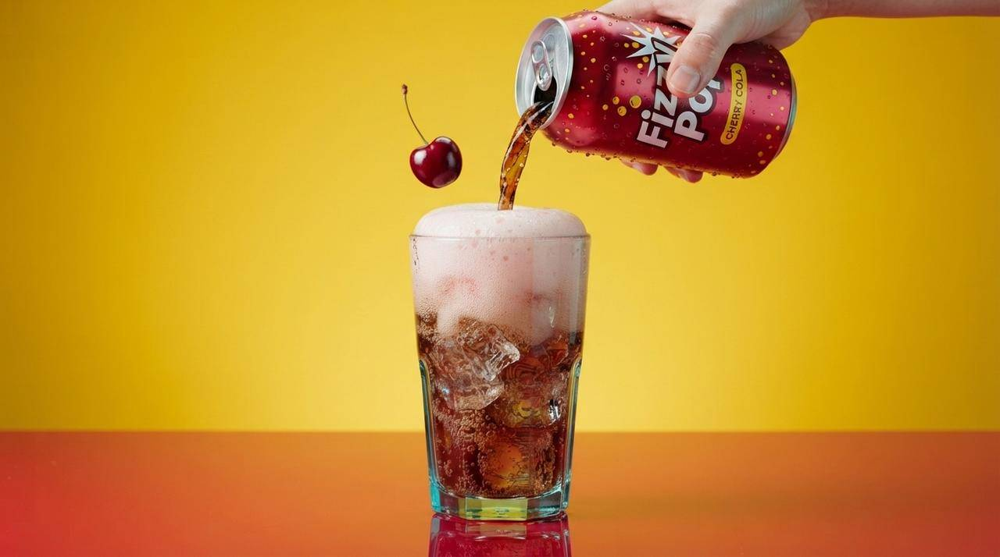
A hand tilts the can. That small decision matters. A can floating on its own can feel artificial. A hand gives the product a physical relationship with the world.
Slow-motion pour. Foam to the rim. A cherry drops into the glass with a crown splash.
The camera rides the bubbles upward through the ice. Then breaks through the surface into the light.
Two seconds of pure appetite.
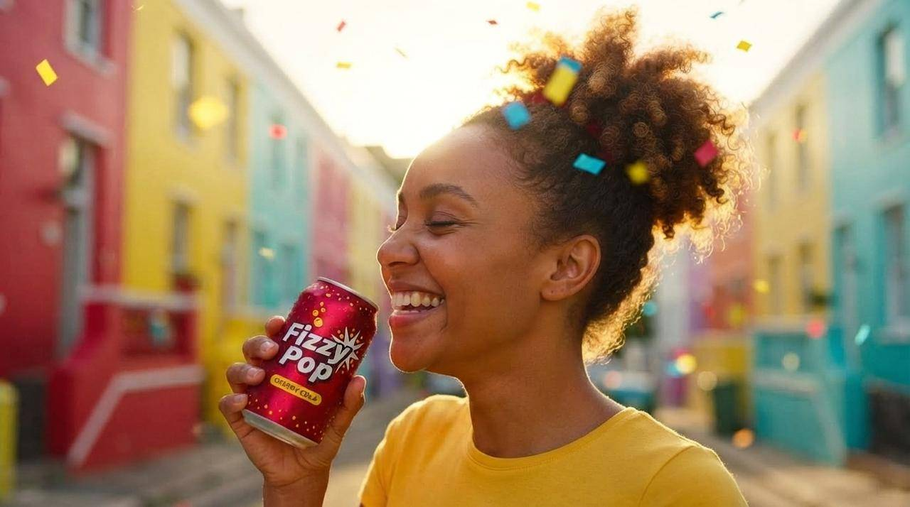
Juno lowers the can. Her eyes open wide. She laughs, confetti caught in her curls.
The expression had to feel spontaneous rather than generated. It took direction to get there.
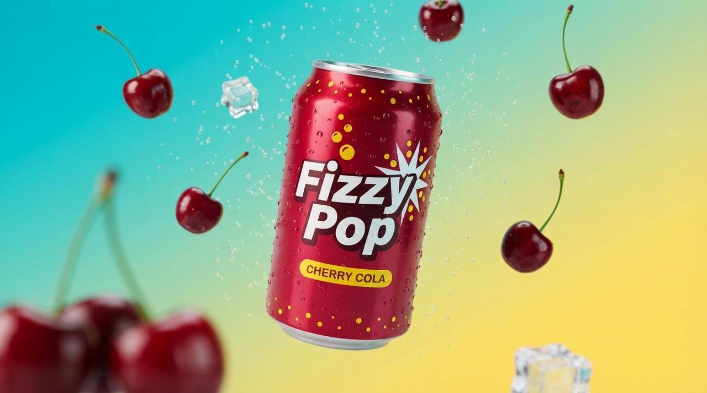
The can hangs completely still at the center of the frame. Cherries, ice and fizz drift around it. A few elements fall softly into the foreground to create depth.
The product doesn’t move. Everything else does.
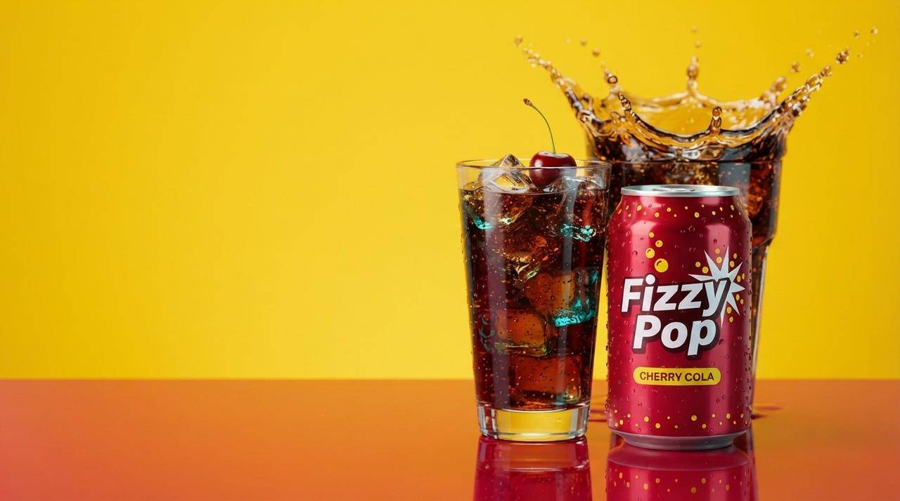
The end card sits in the clear upper left. The first half of the generated clip contained a ghost glass collapsing in the background. So I didn’t try to fix it.
I used the clean second half, slowed it down to fill the shot, and cut the problem out. Cut what isn’t good. Keep what is.
07 · The song
The original plan was a voiceover over an instrumental track. I changed the plan. The commercial needed a jingle.
The hook is three words: Fizzy Pop.
The musical direction combines a 1970s television jingle with modern funk-pop at 116 BPM.
The structure of the song became part of the directing. It opens sleepy and half-time, matching the faded street. Then there is one beat of silence. The can crack lands at 9.25 seconds. The musical drop arrives at 9.61. The sound moment lives inside the gap rather than being layered over the drop. It’s an old advertising trick. It still works.
Fizzy Pop, Fizzy Pop! Cherry cola, crack the top. Turn it up for the summer crowd. Fizzy Pop… open loud!
The complete song runs 68 seconds. The commercial runs 30. The edit uses the intro, the first chorus, then jumps to the horn-stab button ending. The verse and pre-chorus didn’t survive the cut. So their information moved into the graphics:
REAL CHERRY · WILD FIZZ · SUPER CHILL
And a sticker: every sip, a little party
Nothing sung is wasted. What the ear doesn’t get, the eye gets.
08 · The edit
Three rules governed the edit: cut on the beat. Trim every clip to its strongest seconds. Keep the edit honest. No effect should contradict what is actually happening on screen.
There were three major passes. The first version opened the color world with a white flash. The flash went. The final transition cuts directly from the can crack into the cola wave.
The logo originally appeared as a large centered slam over the party. It looked impressive for about two seconds. Then it became obvious it was covering people’s faces. So it became a small badge in the corner.
The graphic pills were reduced in size and moved onto clean yellow. The packshot’s ghost glass was removed entirely.
Then came a second finish: the same film with flat, shadow-free graphics.
The jingle runs at full level throughout, with the real can crack tucked into its silent musical beat.
Two finishes. The final film exists in two versions: on-screen graphics with drop shadows, and the same cut and mix with shadow-free graphics. Same film. Different finish.
09 · The pipeline
Every stage was directed by a person and executed with AI-assisted tools. The technology expanded what one director could produce in a session. It did not make the creative decisions.
| Stage | Tool |
|---|---|
| Direction, script, lyrics, prompts, assembly | Claude (Anthropic) |
| Reference imagery and keyframes | Google Flow |
| Motion | Gemini Omni 1.1 Flash |
| Jingle | Suno |
| Compositing, graphics, mix, render | HyperFrames (open source) |
There were no cameras. No studio. No traditional editing timeline. Ten generated clips, each trimmed to its strongest seconds. Every graphic drawn as a vector overlay. Every creative decision made before generation or in the edit.
And when something didn’t work, the answer wasn’t to accept it because AI made it. Cut it. Change it. Re-render it. That’s the real point of the pipeline. AI didn’t replace the director. It changed what one director could make.
Spec commercial. Fizzy Pop is a fictional brand. The brand, product, logo and jingle were created for this production demonstration.
10 · The files
Shot prompts, the jingle brief, the edit decision list. Available on request.